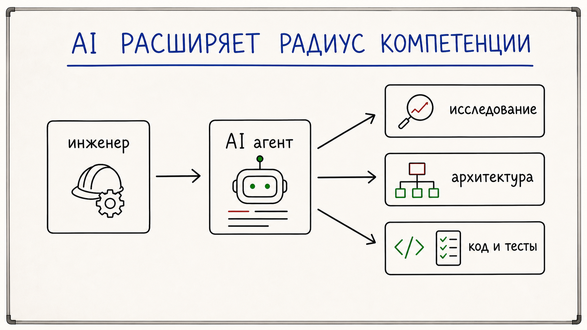
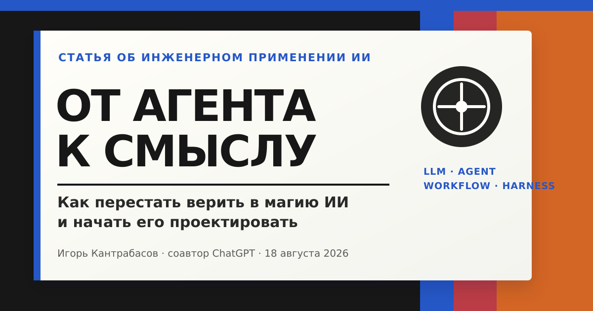

ИИ как великий уравнитель
Как быстрее исследовать, проектировать, разрабатывать и выводить продукты информационной безопасности.
Читать статью
Об инженерии искусственного интеллекта, информационной безопасности и системах доверия.

Как быстрее исследовать, проектировать, разрабатывать и выводить продукты информационной безопасности.

Как перестать верить в магию ИИ и начать его проектировать.